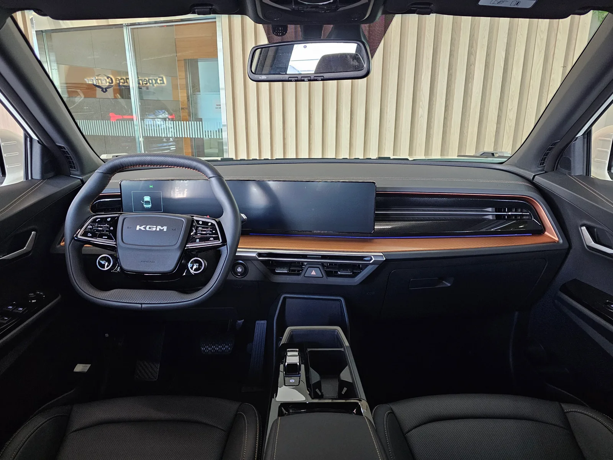
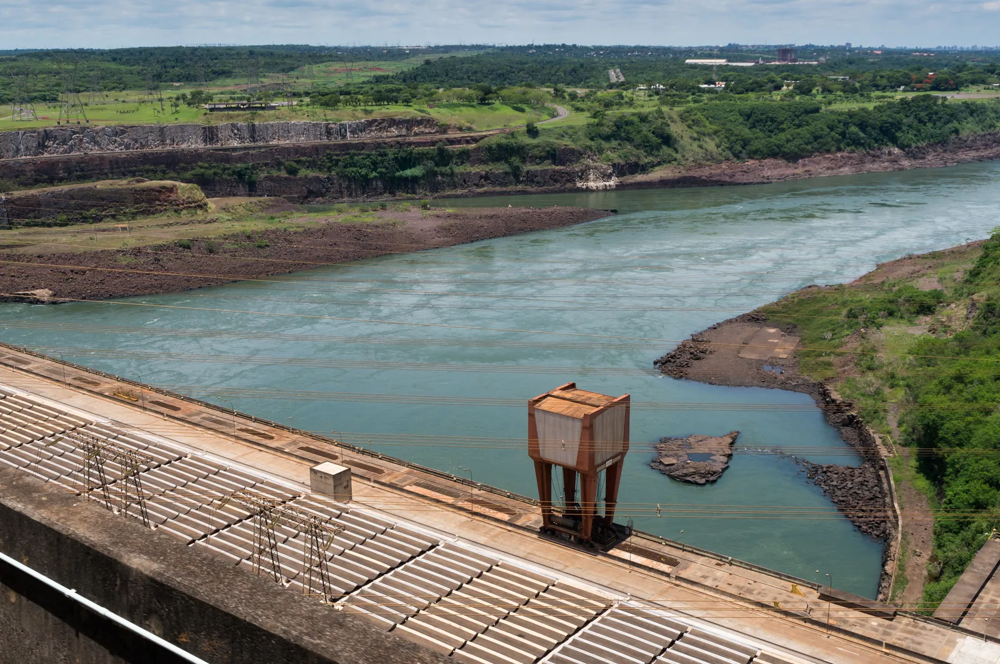

▲ KGM이 파라과이 정부 산하 기관에 공급하는 무쏘 EV — 국내에서는 STD·DLX 두 트림으로 판매 중이다 ⓒ Wikimedia Commons
지구 반대편, 남미 내륙국 파라과이로 국산 전기 픽업트럭이 건너간다. KGM(KG모빌리티)이 무쏘 EV 20대를 파라과이에 공급하기로 했다. 승용차 수출이 아니라 정부 간 개발협력 사업의 일환이라는 점, 그리고 이를 발판으로 중남미 공공 전기차 시장을 노린다는 점이 눈에 띈다.
2026년 9월 15일 산업통상부 초청 연수 프로그램으로 방한한 파라과이 산업부 차관 하비에르 비베로스(Javier Viveros)를 단장으로 한 정부 대표단이 KGM 평택공장을 방문해 생산라인과 디자인센터, 시험주행로를 둘러보고 무쏘·액티언 하이브리드를 직접 시승했다. 이 방문 사실은 KGM이 다음 날인 16일 공식 발표하면서 알려졌다. 간담회에는 황기영 KGM 대표이사와 권용일 개발&생산 부문장, 양정직 한국자동차연구원 연구소장 등이 참석했고, 사절단은 이후 디자인센터에서 내년 초 출시 예정 신차 'SE-10' 콘셉트카와 실물 크기 클레이 모델 제작 과정도 함께 참관했다.
1. 파라과이 공급 계약 개요 — ODA 사업으로 문을 연 남미 시장
이번 공급은 일반적인 수출 계약이 아니라 정부 개발협력 사업의 틀 안에서 이뤄진다. 산업통상부가 추진하고 한국자동차연구원이 주관하는 파라과이 ODA 사업은 2022년부터 2026년까지 5년간 진행돼 왔으며, 자동차부품 TASK 센터 조성·운영을 중심축으로 전기버스·소형전기트럭 시범 보급, 충전소 설치, AS센터 구축까지 포함하는 종합 패키지다.
| 항목 | 내용 |
|---|---|
| 공급 대수 | 무쏘 EV 20대 |
| 사업 주관 | 산업통상부 ODA 사업 / 한국자동차연구원 |
| 공급 주체 | KGM(KG모빌리티) |
| 운용 계획 | 파라과이 정부기관 배치 — 승객·화물 운송 시범 투입 |
| 부대 사업 | 자동차부품 TASK 센터, 전기버스·소형전기트럭 시범보급, 충전소·AS센터 구축 |
| 주요 방문 일정 | 2026년 9월 15일 파라과이 산업부 차관단 KGM 평택공장 방문(16일 공식 발표) |
📍 왜 하필 파라과이인가 — 이타이푸 댐이라는 변수
파라과이는 브라질과 국경을 맞댄 이타이푸 댐을 보유한 나라다. 세계 최대급 수력발전 설비 중 하나로, 파라과이는 자국이 소비하는 것보다 훨씬 많은 전력을 생산해 잉여 전력을 브라질에 수출할 정도로 전력 사정이 넉넉하다. 이 때문에 전기차 보급의 병목이 되는 '전력 인프라' 문제에서 비교적 자유로운 시장으로 꼽힌다. KGM 입장에서는 공공 전기차 시범 사업의 결과가 좋을 경우 승용·상용 부문의 후속 수출로 이어질 여지가 있는 곳이다.
파라과이 무쏘 EV 공급 소식은 아래 기사에서 자세히 확인할 수 있다. 뉴스토마토 기사 바로가기
2. 무쏘 EV, 어떤 차인가 — 국내 판매 스펙과 가격
무쏘 EV(코드명 O100)는 KGM의 첫 전기 픽업트럭이다. 내연기관 무쏘의 프레임 바디를 유지하면서 전동화 파워트레인을 얹은 모델로, 국내에는 2025년 출시돼 STD·DLX 두 트림으로 판매되고 있다.

▲ 무쏘 EV는 프레임 바디 픽업 특유의 적재 능력과 전동화 파워트레인을 결합했다 ⓒ Wikimedia Commons
| 항목 | 내용 |
|---|---|
| 배터리 | 80.6kWh LFP(리튬인산철) 블레이드 배터리 |
| 모터 출력 | 152.2kW |
| 1회 충전 주행거리 | 401km(2WD 기준) |
| 적재함 최대 하중 | 약 500kg급(사양별 상이) |
| 국내 판매가 | STD 4,800만 원 / DLX 5,050만 원(보조금 적용 시 실구매가 3,000만 원대) |
| 주요 사양 | 유틸리티 루프랙, 17인치 다이아몬드 컷팅 휠, 지능형 어댑티브 크루즈 컨트롤 등 |

▲ 계기판과 센터 디스플레이를 가로로 길게 배치한 무쏘 EV의 실내 — KGM 차세대 인포테인먼트 시스템 아테나 2.0을 탑재했다 ⓒ Wikimedia Commons
개방형 적재함 구조는 공기저항 면에서 불리하지만, 전용 배터리 패키징과 공력 최적화로 400km대 주행거리를 확보했다는 점이 국내 출시 당시 강조된 부분이다. 파라과이에서는 승객·화물 겸용으로 투입될 예정이어서, 픽업 특유의 적재 공간 활용성이 시범 운영의 관전 포인트가 될 것으로 보인다.
3. KGM은 왜 중남미로 향하는가
파라과이 공급은 KGM이 최근 부쩍 힘을 쏟고 있는 중남미 전략의 연장선에 있다. KGM은 올해 무쏘를 비롯한 신차를 앞세워 유럽과 중남미 시장 동시 확대를 추진 중이며, 특히 픽업트럭 라인업을 전동화 모델까지 넓혀 수출 제품군을 다변화하고 있다.
✅ KGM 중남미 공략의 세 갈래
· 칠레 — 중남미 최대 픽업 시장에 무쏘를 공식 글로벌 론칭, 칠레·콜롬비아·코스타리카 등 8개국 딜러와 인플루언서 100여 명 초청 행사 진행
· 파라과이 — ODA 사업을 통한 공공부문 전기 픽업 시범 공급으로 시장 진입
· 수출 물량 확대 — KGM은 올해 수출 10만 대를 목표로 내걸고 고공행진 중, 신흥시장 비중 확대가 핵심 축
📍 '공공 수요'가 갖는 의미
공공기관 대상 시범 공급은 단순 판매보다 상징성이 크다. 정부 소유 차량이 도로 위를 달리는 모습 자체가 현지에서는 일종의 '검증'으로 작동하기 때문이다. 특히 전기차처럼 신뢰도 확보가 관건인 신흥 세그먼트에서는, 공공부문 시범 운영 실적이 이후 민간 딜러망 확대나 후속 수출 계약의 근거 자료로 쓰이는 경우가 많다. KGM이 파라과이에서 노리는 것도 이 지점이다.
4. 최근 KGM의 해외 진출 사례 — 미얀마·칠레, 그리고 파라과이
파라과이는 KGM이 올해 새로 개척한 여러 해외 거점 중 하나다. 앞서 KGM은 미얀마 최대 민간 자동차 그룹 SSS와 손잡고 브랜드를 공식 론칭하며 토레스 EVX와 무쏘 EV를 투입, 연간 1,000대 공급을 목표로 내걸었다. 사우디아라비아·베트남으로도 KD(반조립) 사업 확대를 검토하고 있다.

▲ 무쏘 EV 스튜디오 컷 — 파라과이에서는 승객·화물 겸용으로 시범 투입될 예정이다 ⓒ Wikimedia Commons
정리하면 KGM의 최근 해외 확장은 크게 세 갈래로 요약된다. 미얀마는 현지 딜러 그룹과의 협력을 통한 정식 브랜드 론칭, 칠레는 픽업 최대 시장에서의 정면 승부, 파라과이는 정부 ODA 사업을 발판 삼은 공공부문 진입이다. 세 사례 모두 내수 판매가 정체된 모델(무쏘·토레스 계열)을 해외 신흥시장에서 새로운 수요처로 돌리려는 공통된 흐름을 보여준다.

▲ 파라과이-브라질 국경의 이타이푸 수력발전댐 — 풍부한 전력이 파라과이를 전기차 시범 사업지로 주목받게 한 배경이다 ⓒ Wikimedia Commons
KGM의 칠레 무쏘 픽업 론칭 관련 내용은 아래에서 확인할 수 있다. 한국금융신문 기사 바로가기
5. 국내 시장에서 무쏘 EV의 포지션과 연계 시사점
정작 국내에서 무쏘 EV의 존재감은 크지 않다. 4,800만~5,050만 원대 가격에 보조금을 더해도 실구매가가 3,000만 원대 후반에 형성되는데, 전기 픽업이라는 세그먼트 자체가 국내 소비자에게 아직 생소하고, 충전 인프라·상용 수요 측면에서도 뚜렷한 이점을 체감하기 어렵다는 지적이 있다.
✅ 해외 공급이 국내 소비자에게 갖는 의미
· 생산 물량 확보 — 내수 판매가 더디더라도 해외 수요가 붙으면 평택공장 가동률과 고용 안정에 도움
· 상품성 검증 데이터 축적 — 파라과이 등 실사용 환경에서의 시범 운영 데이터가 향후 국내 상용 라인업 개선에 반영될 가능성
· 브랜드 신뢰도 — 해외 정부기관 공급 실적은 '국산 전기 픽업'이라는 낯선 세그먼트에 대한 신뢰도를 높이는 간접 효과
· 가격 정책 변수 — 수출 물량이 늘어나면 생산 규모의 경제 효과로 국내 판매가 인하 여력이 생길 수도 있음
결국 파라과이 공급 20대는 절대적인 물량으로 보면 크지 않지만, KGM이 무쏘 EV를 통해 국내 세그먼트 실험과 해외 신시장 개척을 동시에 진행하고 있다는 신호로 읽힌다. 국내에서 반응이 더딘 모델일수록 해외 판로 확보가 생산 지속성의 관건이 되는 구조이기 때문이다.
6. 요약
KGM이 산업통상부 ODA 사업을 통해 파라과이에 무쏘 EV 20대를 공급한다. 파라과이 산업부 차관단이 2026년 9월 15일 평택공장을 방문해 무쏘·액티언 하이브리드를 시승했으며(16일 공식 발표), 공급된 차량은 현지 정부기관에서 승객·화물 운송에 시범 투입될 예정이다.
이번 공급은 KGM의 중남미 확장 전략과 맞물려 있다. 앞서 칠레에서 무쏘 픽업을 공식 글로벌 론칭했고, 미얀마에서는 SSS 그룹과 협력해 토레스 EVX·무쏘 EV를 앞세운 브랜드 공식 론칭도 진행했다. 파라과이는 여기에 풍부한 수력발전 인프라를 앞세운 전기차 시범 시장으로 새롭게 더해진 거점이다.
국내에서는 아직 존재감이 크지 않은 무쏘 EV지만, 해외 공공부문 공급 실적이 쌓이면서 평택공장 가동률과 브랜드 신뢰도에 긍정적인 영향을 줄 가능성이 있다. 내수 판매가 더딘 모델의 활로를 해외 신흥시장에서 찾는 KGM의 흐름은 당분간 이어질 것으로 보인다.